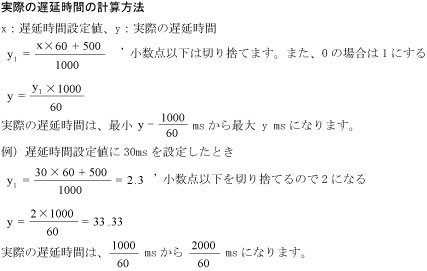
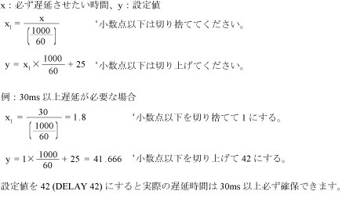

DELAY
（ステートメント）
【SLIM準拠】

指定した時間の間、プログラムの進行を停止します。

DELAY <遅延時間>

<遅延時間>で指定された時間が経過するまで待ちます。
<遅延時間>の単位はmsですが、実際の遅延時間は1/60s単位で増減します。また、多数のタスクを同時に走らせた場合には、遅延時間が指定値より延びることがあります。


-
遅延時間を使用する際には、命令実行中に瞬時停止を行ない再起動すると、一時停止中も遅延時間が経過することに注意してください。
-
実際の遅延時間には16ms程度の誤差があります。
-
指定の時間以上必ず遅延させたい場合の設定値の算出方法は以下の通りです。

|
DIM li1 As Integer
|
|
|
DELAY 100
|
'100ms(0.1s)の時間が経過するまで待ちます。
|
|
DELAY li1 + 10
|
'(li1 + 10)の値の時間が経過するまで待ちます。
|